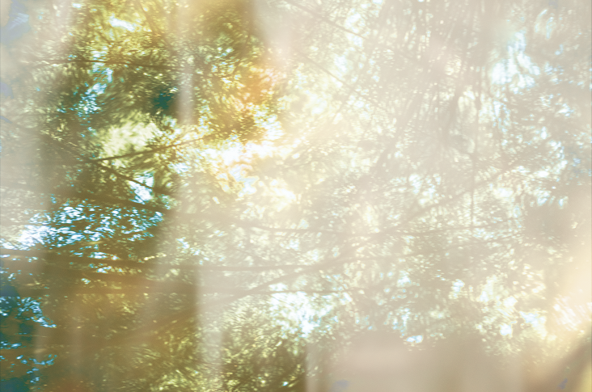
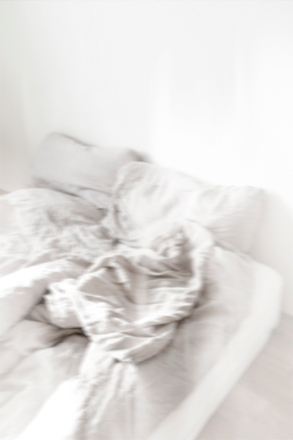
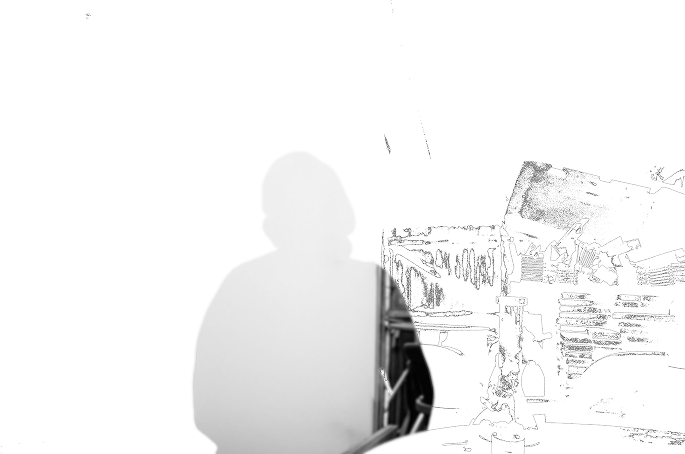
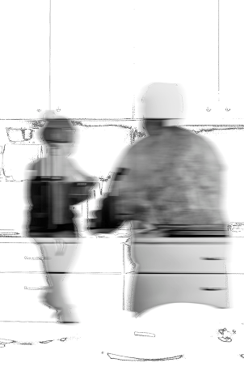
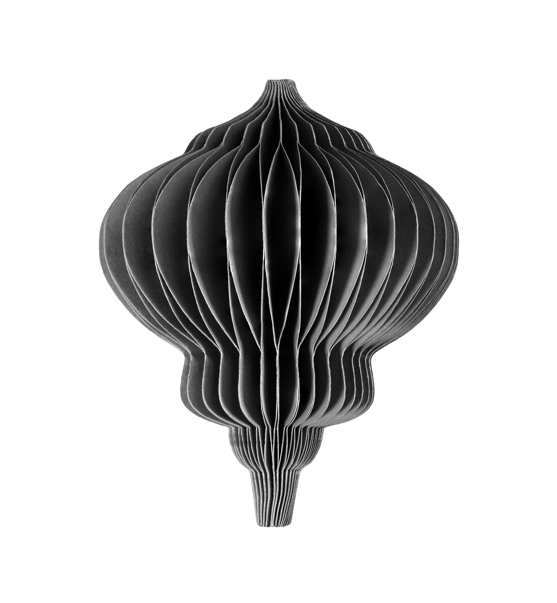
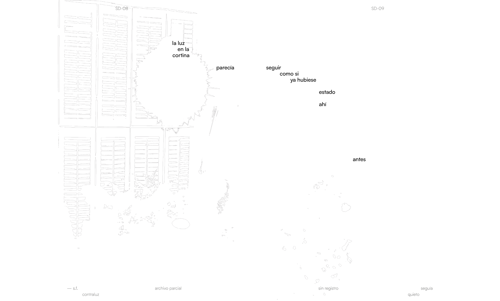
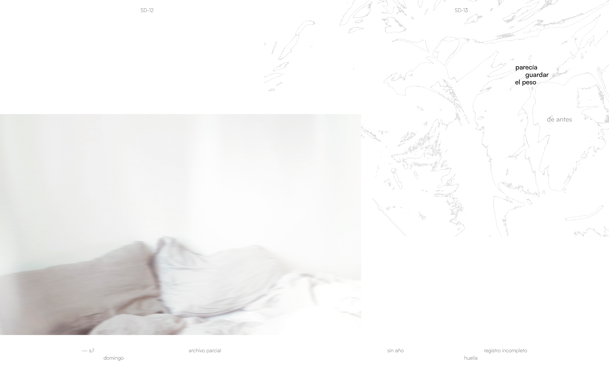
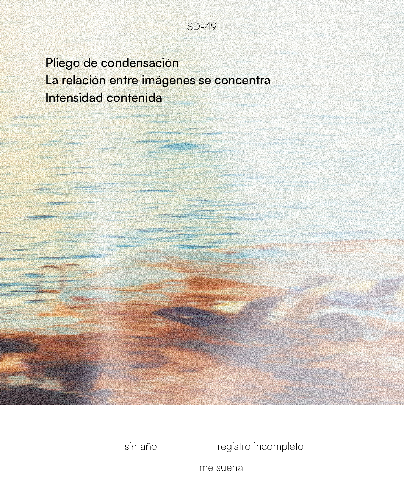
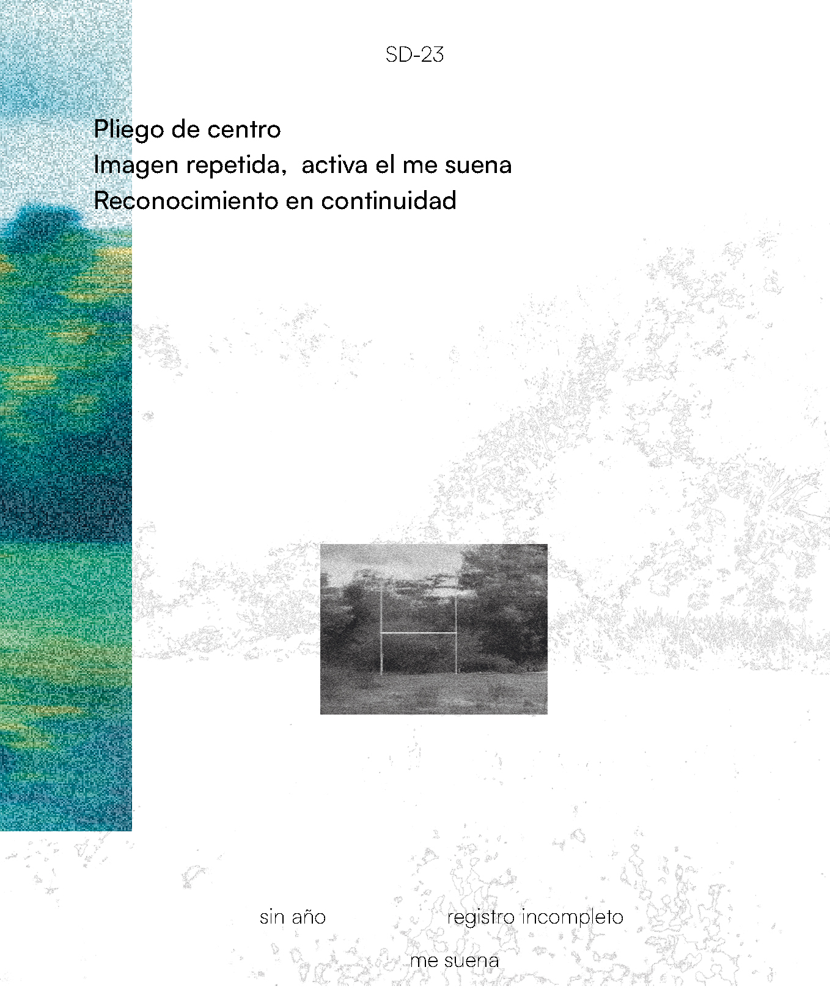
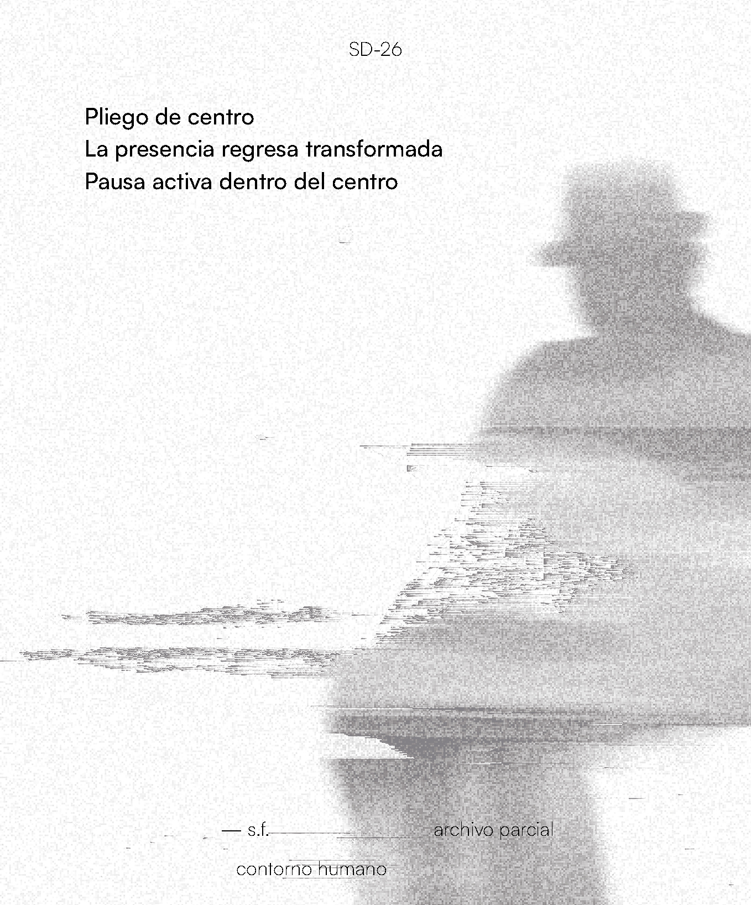

Qué es Saudade
Es un proyecto de diseño gráfico sobre esa sensación de familiaridad que aparece cuando algo nos suena, pero no sabemos exactamente de dónde viene.
Más que reconstruir un recuerdo, trabaja con su huella: con lo que vuelve, cambia y permanece de forma imprecisa.


Lo que activa
El proyecto parte de una experiencia compartida: reconocer algo sin poder situarlo del todo. Esa sensación, cercana al déjà vu, no aparece aquí como un recuerdo exacto, sino como una forma de memoria difusa que se activa por asociación, repetición y eco.



Cómo se construye
Trabaja con imágenes de entornos cotidianos que resultan familiares sin remitir a un recuerdo concreto. En muchas de ellas, la presencia humana desaparece o queda solo como indicio, de manera que la imagen se mueve entre lo reconocible y lo ausente.
A lo largo del proyecto, algunas fotografías reaparecen transformadas en trazos, ecos o versiones desplazadas de sí mismas. Esa repetición no busca insistir en lo mismo, sino producir la sensación de que algo vuelve de otra manera, como ocurre en la memoria.



La web como archivo
Dentro del proyecto, la web funciona como un espacio de lectura y recorrido. No ordena el material de forma cerrada, sino que permite que las imágenes y fragmentos reaparezcan, se relacionen y generen nuevas lecturas desde una memoria compartida.


